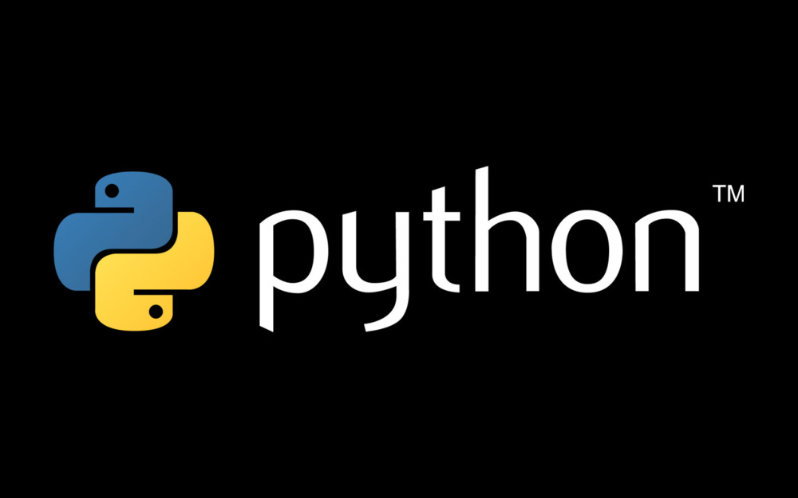
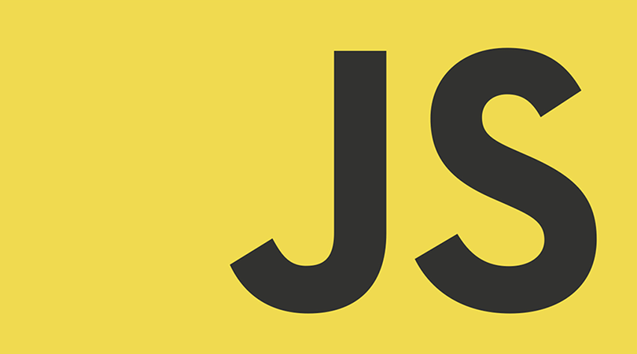

O HTML foi inventado por Tim Berners-Lee, um físico do centro de pesquisas CERN, na Suíça. Ele surgiu com a ideia de um sistema de hipertexto na internet.
Hipertexto significa um texto que possui referências (links) para outros textos que podem ser acessados imediatamente. Ele publicou a primeira versão do HTML em 1991, consistindo em 18 tags. Desde então cada versão do HTML vem com novas tags e atributos (modificadores de tags).
De acordo com o Elemento de Referência do HTML, do Mozilla Developer Network, atualmente existem 140 tags HTML, mesmo que algumas delas já estejam obsoletas (não mais suportadas pelos navegadores).
Devido a rápida ascensão e popularidade, o HTML é agora considerado um padrão oficial da web. As especificações do HTML são mantidas e desenvolvidas pelo Consórcio World Wide Web (W3C). Você pode conferir a última versão da linguagem no site do W3C.
O maior upgrade da linguagem foi o lançamento do HTML5 em 2014. Diversas novas tags semânticas foram adicionadas que revelam o significado do seu próprio conteúdoDocumentos HTML são arquivos com as extensões .html ou .htm. Eles podem ser visualizados com qualquer navegador (como Google Chrome, Safari, ou Mozilla Firefox). O navegador faz a leitura do arquivo e renderiza seu conteúdo para visualização dos usuários.
Geralmente sites comuns possuem diversas páginas HTML. Por exemplo: homepages, páginas explicando o propósito do site, e páginas de contato teriam documentos HTML distintos.
Cada página HTML consiste em uma série de tags (também chamadas de elementos), que podem ser consideradas os blocos de construção das páginas. Elas criam uma hierarquia que estrutura o conteúdo entre seções, parágrafos, cabeçalhos e outros blocos de conteúdo.
Agora que já sabe o que é HTML e como funciona, precisamos passar uma ótima notícia! Sabia que você não tem motivos para temer aquela tela preta cheia de códigos? É possível desenvolver um site de forma muito mais simples!
Com o criador de sites da GoDaddy, aquela tarefa que parecia impossível vai ser feita em menos tempo e com muita facilidade. Com esta ferramenta intuitiva, com cliques e arrastando e soltando elementos, conseguirá criar sua casa digital. Não é incrível?
Comece o quanto antes e lembre-se de que a GoDaddy tem as melhores soluções para você que deseja iniciar seu blog, site ou até mesmo um novo negócio on-line!
CSS é chamado de linguagem Cascading Style Sheet e é usado para estilizar elementos escritos em uma linguagem de marcação como HTML. O CSS separa o conteúdo da representação visual do site. Pense na decoração da sua página. Utilizando o CSS é possível alterar a cor do texto e do fundo, fonte e espaçamento entre parágrafos. Também pode criar tabelas, usar variações de layouts, ajustar imagens para suas respectivas telas e assim por diante.
CSS foi desenvolvido pelo W3C (World Wide Web Consortium) em 1996, por uma razão bem simples. O HTML não foi projetado para ter tags que ajudariam a formatar a página. Você deveria apenas escrever a marcação para o site.
Tags como foram introduzidas na versão 3.2 do HTML e causaram muitos problemas para os desenvolvedores. Como os sites tinham diferentes fontes, cores e estilos, era um processo longo, doloroso e caro para reescrever o código. Assim, o CSS foi criado pelo W3C para resolver este problema.
A relação entre HTML e CSS é bem forte. Como o HTML é uma linguagem de marcação (o alicerce de um site) e o CSS é focado no estilo (toda a estética de um site), eles andam juntos.
CSS não é tecnicamente uma necessidade, mas provavelmente você não gostaria de olhar para um site que usa apenas HTML, pois isso pareceria completamente abandonado.
O CSS é uma ferramenta muito potente que possibilita criar diversas funcionalidades ao invés de usar JavaScript ou outra linguagem mais pesada. Se usado com moderação, CSS pode viabilizar uma ótima experiência ao desenvolvedor e usuários das páginas web.
Com o Cascading Style Sheets é possível criar animações complexas, criar efeitos com uso de parallax, que faz parecer que a imagem de fundo tem uma profundidade diferente um dos outros, criar sites interativos e também jogos com HTML5 e CSS3.
Java é uma linguagem de programação orientada a objeto e desenvolvida pela Sun Microsystems na década de 90, que atualmente, pertence a Oracle. A característica mais marcante dessa linguagem é que programas criados nela não são compilados em código nativo da plataforma. Programas em Java são compilados para um bytecode, que é executado por uma máquina virtual, o que permite aos desenvolvedores criarem um programa uma única vez e depois executar este em qualquer uma das plataformas suportadas pela tecnologia.
Por ser multiplataforma, a linguagem ganhou espaço em diferentes dispositivos, tornando-se quase que onipresente. Esse avanço também aumentou sua importância no cotidiano das pessoas. Prova disso, é que existem muitas empresas de software que disponibilizam programas que são feitos nessa linguagem, tornando a instalação da máquina virtual Java quase que obrigatória na maioria dos sistema operacionais atuais.
A máquina virtual Java também pode executar programas dentro do navegador, através de um plugin. Essa característica aliás, tem sido um dos fatores que mais contribuíram para a adoçam do Java atualmente.
Devido a tudo isso, um computador ou qualquer outro dispositivo que não tenha a máquina virtual Java instalada, poderá limitar bastante a experiência do usuário. A ausência da tecnologia impedirá a execução de alguns programas ou até mesmo o acesso a alguns tipos de serviços como por exemplo, o internet banking (ou home banking) de alguns bancos brasileiros.
Quem possui a máquina virtual instalada em seu computador, normalmente não precisa fazer nada para executar aplicativos e acessar serviços baseados em Java. Contudo, quando ela não está presente, diferentes tipos de erros podem ocorrer e consequentemente, os aplicativos e serviços não funcionam.
“Tem para todos os gostos”, essa é uma verdade sobre a área de programação, Porém, apesar de existir uma grande variedade de linguagens, algumas podem ser mais adequadas para certas empresas e este entendimento vem do profissional habilitado para essa função. Não é só programar, mas compreender o contexto pelo viés de negócios. Outra questão pertinente para você, programador, é que investir tempo e dinheiro para se tornar um verdadeiro mestre em uma linguagem específica pode não ser tão vantajoso. Isso porque pode acontecer dela não ser mais tão requisitada no mercado de trabalho. De acordo com a pesquisa da consultoria Revelo, esse pode ser um fator de dificuldades para arranjar um emprego na área.
No início da década de 90, um grupo de engenheiros dava início ao Projeto Green, na empresa Sun Microsystems (hoje pertencente à Oracle). A ideia era criar novas tecnologias que permitissem a comunicação entre diferentes dispositivos utilizados no dia a dia das pessoas, como televisão, vídeo cassete, aparelhos de TV a cabo, eletrodomésticos e entre outros. Sim, a ideia era promissora para a época, mas não deu certo, o mercado ainda não possuía espaço para a tecnologia. Mas nem tudo foi em vão, afinal, esse projeto deu origem à linguagem de programação Java. Com a expansão da internet, a linguagem foi conquistando espaço e sendo utilizada para executar aplicações nos browsers. Desta forma, transcendendo a simples interpretação de códigos HTML. Atualmente ela é usada para diversos fins e está presente também em sistemas operacionais, dispositivos móveis, mainframes e por aí vai.
 Criada no início dos anos 90, Python é uma linguagem de programação desenvolvida e distribuída pela Python Software Foundation, comumente utilizada para fins diversos na programação. Considerada uma linguagem de altíssimo nível, Python suporta diferentes paradigmas de programação e conta com recursos poderosos. Uma das principais características da linguagem Python é a legibilidade do código. A linguagem possui uma sintaxe moderna e clara, o que favorece a escrita de códigos organizados, fáceis de compreender e manter, sem perda em produtividade
 Muita gente confunde JavaScript com Java, por isso é preciso deixar isso bem claro. São duas linguagens de programação distintas. Em outras palavras… JavaScript não é Java! Essa confusão entre as duas linguagens existe desde o lançamento do JavaScript e se deve, claro, aos seus nomes. Mas existe uma razão para elas possuírem nomes parecidos? Sim! O JavaScript estava sendo desenvolvida pela empresa Netscape, que negociava na época uma parceria com a Sun Microsystems (do Java, lembra?). Assim, para aproveitar um pouco do sucesso da linguagem Java, em uma estratégia de Marketing, a linguagem que antes era chamada de LiveScript, foi lançada com o nome de JavaScript.
Perl
Perl é uma linguagem de programação criada e mantida pelo programador americano Larry Wall. A ideia de Wall era criar uma linguagem que, acima de tudo, fosse prática e proporcionasse mais liberdade ao desenvolvedor.
Php
PHP é uma linguagem de programação de livre distribuição, utilizada em todo o mundo para criação de sistemas web dinâmicos. OK, mas o que significa PHP? É uma longa história, mas vamos resumi-la para você. Com a expansão da internet, o programador Rasmus Lerdorf criou uma ferramenta simples para contabilizar o número de visitantes de suas páginas. Daí surge o Personal Home Page Tools, o embrião da linguagem PHP, baseado nas linguagens C e Perl. Na segunda versão do PHP – que até então ainda não era uma linguagem de programação – novas funcionalidades foram adicionadas, dentre elas a interpretação de formulários. A partir disso, Lerdorf disponibilizou o código fonte do PHP para outros programadores que passaram a trabalhar no projeto e criar novos recursos à ferramenta. Em 1998, os programadores israelenses Zeev Suraski e Andi Gutmans reescreveram o PHP, oferecendo novas funções e características capazes de torná-la uma linguagem de programação. Desse modo, a linguagem se mantinha com o nome PHP, devido à popularidade já conquistada, mas o significado da sigla passava a ser PHP Hypertext Preprocessor, um acrônimo recursivo. Os códigos PHP são interpretados no servidor, logo trata-se de uma linguagem server-side. Sempre que o navegador solicitar, o interpretador processa o código da página e gera um HTML, que será enviado como resposta ao cliente. Podendo incluir, por exemplo, informações do banco de dados, já que o PHP possui essa funcionalidade.
Swift
Criada pela Apple, Swift é uma linguagem de programação destinada ao desenvolvimento de aplicativos para as plataformas da marca, como Mac OS, iOS, Apple Watch e Apple TV. Swift é open source e foi projetada também com o objetivo de proporcionar liberdade para os programadores. Possui sintaxe simples, performance e possibilidade incorporar códigos em Objective-C (antecessor ao Swift). A linguagem Swift vem ganhando cada vez mais espaço no mercado de TI. Afinal de contas, se você deseja trabalhar com os produtos da Apple, você precisa aprender Swift ou Objective-C. E, convenhamos, a Apple ocupa uma fatia substancial do mercado de TI.